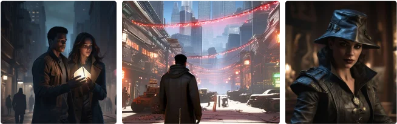

The night of the heist arrived, cloaking the city in darkness as the team set their
plan into motion.
With Lena guiding them through the museum's intricate security systems, they navigated the labyrinthine
corridors with the grace of seasoned professionals. But even the best-laid plans could falter in the face
of unforeseen obstacles.
As they reached the inner sanctum where the artefact lay in wait, a betrayal unfolded—one that shattered
alliances and left the team reeling. In the chaos that ensued, alarms blared, and guards descended upon
them with ruthless efficiency. In the end, only Jackson and Ana managed to escape, the artifact clutched
tightly in their grasp. As they disappeared into the night, pursued by the echoes of their past and the
specter of betrayal, they knew that their journey was far from over.
